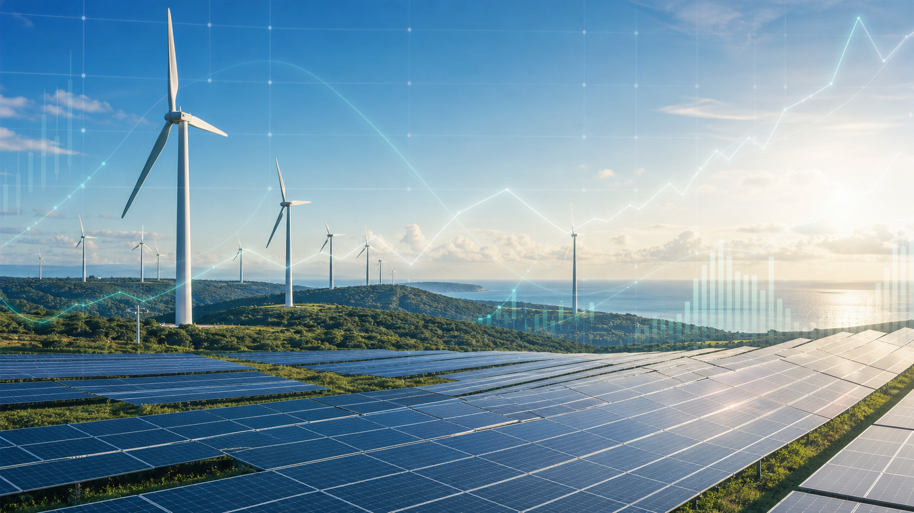

뉴스&오피니언
탄소배출권 선물시장 도입 본격화
세계일보 · 2026-04-23
Your Gateway to
Climate Finance
Connecting ideas, insights, and innovation

세계일보 · 2026-04-23
우리금융경영연구소 · 2026-04-22
우리금융경영연구소 · 2026-04-23
■ 배출권 거래시장 활성화를 위한 선물시장 도입과 관련 인프라 구축이 본격화됩니다.
■ 제4차 계획기간의 유상할당 비중 확대와 시장 안정화 정책이 함께 추진됩니다.
■ 금융기관과 감축 기술 기업의 프로젝트 파이낸싱 참여가 확대될 전망입니다.
■ 영국 국제투자공사는 향후 5년간 기후 프로젝트 투자 확대를 추진합니다.
■ 공적개발원조 축소 속에서 민간 자본 동원과 신흥시장 파트너십을 강화합니다.
■ 배출권 가격 상승이 탄소 다소비 업종의 비용과 투자 의사결정에 영향을 주고 있습니다.
■ 감축 기술 기업에는 성장 기회가, 제조기업에는 전환금융 수요가 확대됩니다.
■ 대형 해상풍력 프로젝트 파이낸싱에 금융기관과 기업은행이 공동 참여합니다.
■ 재생에너지 전환 지원과 장기 생산적 금융 실적 확보가 핵심입니다.
■ 산업계 전력 전환 수요에 맞춰 장기 녹색금융 상품과 평가 기준이 구체화됩니다.
■ 프로젝트의 감축 효과와 전환 경로를 함께 검증하는 투자 심사가 강화됩니다.
2026. 4. 23. · 우리금융경영연구소
2026. 2. 27. · 한국ESG기준원
2026. 2. 23. · 한국사회책임투자포럼
2026. 3. 3. · JPMorgan Chase & Co.
2026. 2. 2. · OECD
Rocky Mountain Institute
2026. 3. 20.
2026. 2. 3.
2026. 3. 6.
연사 박종호 우리금융경영연구소 대표이사
연사 한상욱 중소벤처기업부 장관 등
연사 김성한 기후전략센터장